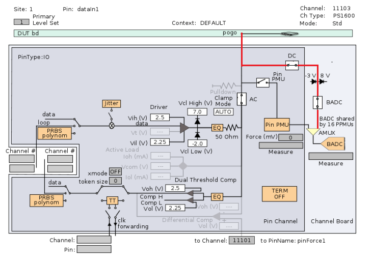

OutputDC
This test method measures the dc output voltages of the DUT under specific current load conditions. During the measurement, the device is kept in a stable condition.
You can use this test method to measure the output low and output high voltages individually, or together in a single test.
The measurement can be performed:
- using the Pin PMU (with or without termination)
- using the programmable load and the comparator.
- using BoardADC
This test method supports test table. But you need to enter the test names manually in the parameter. You can use both test table and testflow limits in a testflow. The test table has higher priority than testflow limits. If a test name used in the test flow is defined in both test table and testflow limits, the value defined in the test table will be used.
Output DC test using PMU

If not already connected, the test system is set to the CONNECTED state, with the AC relays closed, the sequencer set to BREAK and the DPS set to the voltage programmed in Level Setup.
Next, the sequencer label is checked. The label must specify a sequencer program containing a linear vector sequence. The sequencer jumps over any match loops and repeat vectors. Vectors making up an endless (unconditional) loop are executed once to the end of the loop whereupon the sequencer stops.
The test method scans the expected data pattern for a low or a high state (depending on the specified test) on a pin-by-pin basis. The scan starts either at the vector address specified by the vector label, or at the vector address specifying a range of vectors or two single vectors that you enter. For the relationship between the vector label and the vector range/single vectors see the "Dependencies" section.
The test method looks for the first occurrence of a low or a high state on each pin and notes the vector addresses where these occur. If measurement of both levels is specified, it then continues the scan looking for the opposite state on each pin, again noting the vector addresses. The test method generates a warning if it cannot find a low or a high state for any of the pins within the search range.
The test method programs the delay counter to stop the sequencer at the specified vectors where the measurement should take place. All high and low levels for the specified pins that can be measured at these vector addresses are measured. Then the analyzer delay counter is programmed to the next specified vector and so on until all the pins have been measured at the low and high state (if specified).
During the measurement, the sequencer is set to the break state, and, depending on how the termination flag is set (ON or OFF), the measurement is taken by closing the AC relay (termination ON) and PPMU relay, or closing the PPMU relay and opening the AC relay (termination OFF).
If termination is ON for io pins, and for o pins with term type termination, the following formula applies:
DUT output current = (PMU current) + (test system driver current)
Because the DUT output current in this case can be high enough to damage your device, the test method generates a warning, reminding you to set the force current to a low value, if the specified current limit is > 1 µA.
The PMU is connected to the DUT pin. The PMU is now working in current force mode by supplying the specified force current. The current direction is specified by sign. The DUT output voltage can now be measured by the PMU.
Dependencies
- Functional test must pass.
- Linear vector sequences must be used (any match loops or repeat vectors contained therein are ignored).
- DUT outputs must be kept stable until end of the voltage measurement by setting the correct break vector.
- Minimum scanned vector range is 2, maximum scanned vector range the end of installed vector memory respectively.
- Both low and high expected data states for the specified pins must be present within the specified vector range. A warning message is issued if this is not the case.
- If the measurement is made with termination (AC relay closed for measurement), the primary level set must not use the programmable load because it cannot be compensated for.
Output DC test using the programmable load

The output dc test is executed using two functional tests if both the high and low levels are to be measured. The programmable load forces the current at the device output pins.
Note that a positive current flows into the device and a negative current flows out of the device. The commutation voltage for the programmable load is automatically set and its value depends on the pass value that you enter.
It is very important that the timing set used for the test contains as slow a period as possible as this is a dc measurement and not an ac measurement.
Prior to execution of the test, the status of the test system is checked to determine if it is currently connected or disconnected. If it is disconnected, then the CONNECT() is executed. If it is already connected, then the output dc test method continues.
Pass/Fail Tests
To test for the low level pass value, the low level of the comparator is set to maxPassLow for the pins specified in pinlist and a functional test is executed. A pass is returned if:
measured value ≤ maxPassLow
To test for the high level pass value, the high level of the comparator is set to minPassHigh for the pins specified in pinlist and a functional test is executed. A pass is returned if:
minPassHigh ≤ measured value
In GPF mode, to achieve best throughput, you need to do the following items as below:
- create a new level set as followed:
VOH= pass min voltage of high level
VOL= pass max voltage of low level
- select the new level set as primary for test suite
- modify the code example in the function
doMeasurementByProgramLoad()in OutputDCUtil.hpp file according to the comments
Value Test
The output dc test using the programmable load can also be used to measure the actual high and low pass values.
To measure the maximum low pass value, a binary search is performed, varying the low level of the comparator between the high level defined in the primary level set and the test system low threshold limit (-2.0V).
As maximum low pass value can be different for different pins, the test result reports a minimum and a maximum value for the low pass value threshold. In case of per pin list evaluation the minimum and maximum values are identical.
To measure minimum high level value, a binary search is performed, varying the high level of the comparator between the low level defined in the primary level set and the test system high threshold limit.
A minimum and a maximum high pass value threshold is reported for the pins of a pin list. In case of parallel evaluation and for single pins, the minimum and maximum values are identical.
Dependencies
- Functional test must pass.
- Both low and high expected data states for the specified pins must be present in the specified functional test.
- The output DC test is not possible for devices using ECL technology. This is because for ECL devices, current must always flow into the device. For the output dc measurement, the commutation voltage of the programmable load is always automatically set. For current to flow into the device, the commutation voltage is always set to 1 V less than the specified pass value of the test. As the low threshold for the commutation voltage is -2 V, maxPassLow must always be ≥ -1 V, which is not possible for ECL devices.
Voltage measurement using the Board ADC
From the release 6.3.3 on, for the Pin Scale digital cards there is a direct connection from the pogo-pin to the Board ADC which allows you to use the Board ADC for high impedance voltage measurements.
This is illustrated in the following figure for the PS1600 card.

This is supported on all digital cards. No license and no model-file entry is required to enable the feature. Also no additional calibration is required.
Using this feature allows you to make voltage measurements more quickly than with, for example, the pin PMU.
So, during DUT board design you should take this into account and spread the channels to be measured in parallel on as many logical boards as possible.
UsePMU |
string |
Use PPMU to do the measurement or not. Its value can be YES or NO. The following parameters in this table are only available if its value is YES. |
UsePPMU.pinlist |
Pinstring |
The list of pins pin groups to be measured. The pins or pin groups are separated by comma. |
UsePPMU.measuredLevel |
string |
The level to be measured. Its value can be:
To specify different settings for different pins or pin groups, separate them with comma. |
UsePPMU.forceCurrent_uA |
string |
The force current in [uA]. If both levels are measured, its value is in the format of "(forceCurrent_low,forceCurrent_high)". To specify different settings for different pins or pin groups, separate them with comma. |
UsePPMU.settlingTime_ms |
string |
Addition settling time to system in [ms]. If both levels are measured, its value is in the format of "(settlingTime_low, settlingTime_high)". Default is "(1.0, 1.2)". To specify different settings for different pins or pin groups, separate them with comma. |
UsePPMU.termination |
string |
Measure with termination or not. Its value can be: ON: with termination OFF: without termination To specify different settings for different pins or pin groups, separate them with comma. |
UsePPMU.testName |
string |
The test names to be used as limit. You can:
To specify different settings for different pins or pin groups, separate them with commas. |
UseBoardADC |
string |
Use board ADC to do the measurement or not. Its value can be YES or NO. The following parameters in this table are only available when its value is YES. |
UseBoardADC.pinlist |
PinString |
The list of pins or pin groups to be measured. The pins or pin groups are separated by comma. |
UseBoardADC.measuredLevel |
string |
The level to be measured. Its value can be: LOW: only measure low level voltage HIGH: only measure high level voltage BOTH: measure both low and high level voltage Default is BOTH. To specify different settings for different pins or pin groups, separate them with comma. |
UseBoardADC.settlingTime_ms |
string |
The additional settling time to system in [ms]. If both levels are measured, its value is in the format of "(settlingTime_low, settlingTime_high)". Default is "(1.0, 1.2)". To specify different settings for different pins or pin groups, separate them with comma. |
UseBoardADC.termination |
string |
Measure with termination or not. Its value can be: ON: with termination OFF: without termination Default is OFF. To specify different settings for different pins or pin groups, separate them with comma. |
UseBoardADC.testName |
string |
The test names to be used as limit. You can:
To specify different settings for different pins or pin groups, separate them with commas. |
UseActiveLoad |
string |
Use active load to do the measurement or not. Its value can be YES or NO. The following parameters are only available when its value is YES. |
UseActiveLoad.pinlist |
PinString |
The list of pins or pin groups to be measured, separated by comma. |
UseActiveLoad.measuredLevel |
string |
The level to be measured. Its value can be: LOW: only measure low level voltage HIGH: only measure high level voltage BOTH: measure both low level and high level voltage Default is BOTH. To specify different settings for different pins or pin groups, separate them with comma. |
UseActiveLoad.forceCurrent_uA |
string |
The force current in [uA]. For both level test , its value is in the format of "(forceCurrent_low, forceCurrent_high)". Default is "(10,20)". To specify different settings for different pins or pin groups, separate them with comma. |
UseActiveLoad.testName |
string |
The test names to be used as limit. You can:
To specify different settings for different pins or pin groups, separate them with commas. |
vectorRange |
string |
Vector range to be scanned for low or high output. Its value can be in the format of: number: Only the vector number will be scanned number1,number2: The vector number1 and number2 will be scanned. number1-number2: The vectors between number1 and number2 are scanned. |
output |
string |
Controls how to output the per pin test result. It can be:
ShowFailOnly: Only outputs the failed pin result to the report window. |
Limits
If you define new test names in the parameter testName, you need to add limits to the test suite with the same test name. (Refer to Adding a limit in the Properties view and Adding a limit on the Tests page of how to add a limit.)
Implementation pseudo code
IF not connected THEN connect to DUT ENDIF Execute a functional test to the specified cycle Retrieve the functional test result IF PPMU low level test THEN setup PPMU measurement conditions ENDIF IF SPMU low level test THEN setup SPMU measurement conditions ENDIF IF board ADC low level test THEN setup board ADC measurement conditions ENDIF execute the measurements in parallel IF PPMU low level test done THEN retrieve PPMU measurement result ENDIF IF SPMU low level test done THEN retrieve SPMU measurement result ENDIF IF board ADC low level test done THEN retrieve board ADC measurement result ENDIF IF PPMU high level test THEN setup PPMU measurement conditions ENDIF IF SPMU high level test THEN setup SPMU measurement conditions ENDIF IF board ADC high level test THEN setup board ADC measurement conditions ENDIF execute the measurements in parallel IF PPMU low level test done THEN retrieve PPMU measurement result ENDIF IF SPMU low level test done THEN retrieve SPMU measurement result ENDIF IF board ADC low level test done THEN retrieve board ADC measurement result ENDIF IF active load measurement THEN Execute measurement with active load retrieve the measurement results ENDIF Judge and log the test results.
Functional changes
- Introduced in SmarTest 6.5.4
- SmarTest 7.1.1: Mixed usage of test table and testflow limits in one testflow is supported in TML 2.1.1.
- SmarTest 7.1.3: Supports measuring the PS1600 high voltage pins with PPMU and board ADC in TML 2.1.5.
- SmarTest 7.2.1: New option ShowFailOnly for the parameter output in TML 2.2.0.